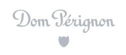
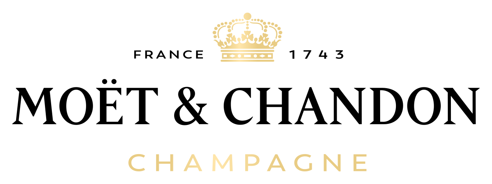

홈 > 브랜드 매거진 > 돔 페리뇽
돔 페리뇽
돔 페리뇽(Dom Pérignon)은 프랑스 모엣 샹동이 생산하는 빈티지 프레스티지 퀴베 샴페인 브랜드이다.
산업 분야 식음료 · 공개 등급 자료 기반 · 브랜드 평가 4.3 ★

한눈에 보는 브랜드
돔 페리뇽(Dom Pérignon)은 수도사 돔 페리뇽의 이름을 딴 브랜드로 첫 빈티지는 1921년, 첫 판매는 1936년이다. 1987년 이후 LVMH 와인·스피리츠 부문에 속하며 단일 수확연도 포도만 사용한다.
브랜드 관점
돔 페리뇽 항목은 단순한 이름 목록이 아니라 식음료 시장 안에서 어떤 역할을 하는지 읽기 위한 기준점입니다. 제품·서비스 범위, 유통 방식, 시각 아이덴티티, 시장 포지션을 함께 비교하면 같은 산업의 다른 브랜드와 차이가 선명해집니다.
시작과 성장
모엣 샹동이 생산하는 빈티지 샴페인으로, 첫 빈티지 1921년, LVMH 소유다.
브랜드 아이덴티티
빈티지 원칙을 고수하는 세계 최초의 프레스티지 퀴베 샴페인이다.
제품과 서비스
대표 제품과 서비스 정보는 편집 검수 후 공개됩니다.
현재 상태
타임라인
BI/CI 변천사
함께 읽을 브랜드
버거킹는 미국의 식음료 브랜드로, 맛, 메뉴 구성, 패키지, 매장 또는 유통 채널이 함께 브랜드 경험을 만드는 영역입니다.
아베
아베;뉴
식음료 · 자료 기반아베;뉴아베;뉴는 식음료 브랜드로, 맛, 메뉴 구성, 패키지, 매장 또는 유통 채널이 함께 브랜드 경험을 만드는 영역입니다.
An
Angelika Köhlermann
식음료 · 자료 기반Angelika KöhlermannAngelika Köhlermann는 오스트리아의 식음료 브랜드로, 맛, 메뉴 구성, 패키지, 매장 또는 유통 채널이 함께 브랜드 경험을 만드는 영역입니다.

식음료 · 자료 기반모엣&샹동모엣&샹동(Moët & Chandon)은 1743년 프랑스 에페르네에서 설립된 세계적인 샴페인 하우스이다.
*o
*ouch*
식음료 · 편집 검수*ouch**ouch*는 2025년에 기록된 Burger Branding 계열의 브랜드 아이덴티티 사례입니다. Oker가 아이덴티티 작업의 디자이너로 기록되어 있습니다. 공개...
Dr
Drumroll
식음료 · 편집 검수DrumrollDrumroll는 2024년에 기록된 Food Brands 계열의 브랜드 아이덴티티 사례입니다. Gander가 아이덴티티 작업의 디자이너로 기록되어 있습니다. 공개...
Fi
Fibe
식음료 · 편집 검수FibeFibe는 2024년에 기록된 Soft Drinks 계열의 브랜드 아이덴티티 사례입니다. Analogue가 아이덴티티 작업의 디자이너로 기록되어 있습니다. 공개 섹션...
Ko
Kokoro
식음료 · 편집 검수KokoroKokoro는 2025년에 기록된 Fast Food 계열의 브랜드 아이덴티티 사례입니다. 27b.가 아이덴티티 작업의 디자이너로 기록되어 있습니다. 공개 섹션 정보는...